Content from Introduction
Last updated on 2026-07-09 | Edit this page
Estimated time: 10 minutes
Overview
Questions
- Why use version control?
Objectives
- Understand the benefits of an automated version control system.
- Understand the difference between Git and GitHub.
What is a version control system?
Version control is a piece of software which allows you to record and preserve the history of changes made to directories and files. If you mess things up, you can retrieve an earlier version of your project.
Why use a version control system?

The comic above illustrates some of pitfalls of working without version control. Some of the benefits are given below:
Storing versions (properly)
Saving files after you have made changes should be an automatic habit. However if you want to have different versions of your code, you will need to save the new version somewhere else or with a different name.
- Do you just save the file(s) you changed, or all the files in the project?
- How do you name these different versions? It is very easy to lose track of what is what.
- How do you know what is different between each version?
Without a VCS you will probably end up with lots of nearly-identical (but critically different) copies of the same file, which is confusing. Your project will probably start to look like this:

A VCS treats your files as one project, so you only have one current version on your disk (the working copy) - all the other variants and previous versions are saved in the VCS repository. A VCS starts with a base version of your project and records changes you make along the way.
Add changes sequentially 
Save different versions 
Merge different versions
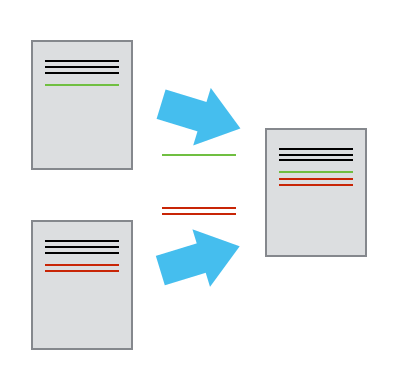
Restoring previous versions
The ability to restore previous versions of a file (or all the files in your project) greatly reduces the scope for screw ups. If you make changes which you later want to abandon (e.g. the wording of your conclusion section was better before you started making changes, your code changes end up breaking things which previously worked and you can’t figure out why etc), you can just undo them by restoring a previous version.
Understanding what happened
Each time you save a new version of your project, VCS requires you to give a description of why you made the changes. This helps identify which version is which.
Backup
For distributed version control like Git, each person working on the project has a complete copy of the project’s history (i.e. the repository) on their hard drive. This acts as a backup for the server hosting the remote repository.
Collaboration
Without VCS, you are probably using a shared drive and taking turns to edit files, or emailing files back and forth. This makes it really easy to overwrite or abandon someone else’s changes because you have to manually incorporate the other person’s changes into your version and vice versa.
With VCS, everyone is able to work on any file at any time without affecting anyone else. The VCS will then help you merge all the changes into a common version. It is also always clear where the most recent version is kept (in the repository).
Example scenario
Think about the following situation:
You are working on a handful of MATLAB files. You make a few changes, and then you want to try something you’re not quite confident about yet, so you save a copy in another folder just in case.
Then you want to try out the program with more data on a bigger machine, and you make a few changes there to get it working properly. Then you try out something else in the copy on your laptop.
Now you have three or four copies, all slightly different, and you have some results generated from all of them, and you include some of it in a paper.
Then someone asks for the same results based on a new data file. You have to go off and remind yourself which version you used, find out whether you still have it at all or whether you’ve changed it again since, check whether it really has the vital changes you thought you’d included but that might have been only on that other machine, and so on.
You should easily be able to see the benefits of VCS in the situation above.
What files can I track using version control?
VCS is typically used for software source code, but it can be used for any kind of text file:
- Configuration files
- Parameter sets
- Data files
- User documentation, manuals, and journal papers, whether they be plain-text, LaTeX, XML, md etc
- Have a look at some of the projects on GitHub
Why should I avoid tracking binary files with version control?
It is possible to add binary files to a Git repository, but this is usually a bad idea:
- diffs between versions become meaningless
- binary files are often large, and thus slow down your repository
- changes to binary files often required a whole new copy to be saved, so your repository can quickly grow in size
Strategies for dealing with large binary files are discussed here.
Git vs GitHub
For this session, we’ll be using Git, a popular distributed version control system and GitHub, a web-based service providing remote repositories. Distributed means that each user has a complete copy of the repository on their computer and can commit changes offline. If you have used a centralized version control system before e.g. Subversion, this will be one of the major differences to how you are used to working.
Key Points
- Git is a version control tool; one of many.
- GitHub is a repository hosting service; one of many.
- Use version control to store versions neatly, restore previous versions, understand what happened (and why), and always know which is the current version.
Content from Tracking changes with a local repository
Last updated on 2026-07-09 | Edit this page
Estimated time: 35 minutes
Overview
Questions
- How do I get started with Git?
- Where does Git store information?
Objectives
- Know how to set up a new Git repository.
- Understand how to start tracking files.
- Be able to commit changes to your repository.
Version control is centred round the notion of a repository which holds your directories and files. We’ll start by looking at a local repository. The local repository is set up in a directory in your local filesystem (local machine). For this we will use the command line interface.
Why use the command line?
There are lots of graphical user interfaces (GUIs) for using Git: both stand-alone and integrated into IDEs (e.g. MATLAB, Rstudio, PyCharm). We are deliberately not using a GUI for this course because:
- you will have a better understanding of how the git comands work (some functionality is often missing and/or unclear in GUIs)
- you will be able to use Git on any computer (e.g. remotely accessing HPC systems, which generally only have Linux command line access)
- you will be able to use any GUI, rather than just the one you have learned
- you’ll be able to search for help online and understand the answers
By the end of the course, this should no longer be you: 
Setting up Git
Instructions for setting up Git on your own machine are given under setup.
You can verify you have everything set up correctly like this:
OUTPUT
Hi <YOUR_GITHUB_USERNAME>! You've successfully authenticated, but GitHub does not provide shell access.Tell Git who we are
As part of the information about changes made to files Git records who made those changes. In teamwork this information is often crucial (do you want to know who rewrote your ‘Conclusions’ section?). So, we need to tell Git about who we are (note that you need to enclose your name in quote marks):
Set a default editor
When working with Git we will often need to provide some short but useful information. In order to enter this information we need an editor. We’ll now tell Git which editor we want to be the default one (i.e. Git will always bring it up whenever it wants us to provide some information).
You can choose any editor available on your system, but for this
course we will use nano.
Set remote merge strategy
Set the default behaviour for merging remote branches (this afternoon).
Git’s global configuration
We can now preview (and edit, if necessary) Git’s global
configuration (such as our name and the default editor which we just set
up). If we look in our home directory, we’ll see a
.gitconfig file,
OUTPUT
[user]
name = Your Name
email = yourname@yourplace.org
[core]
editor = nanoThese global configuration settings will apply to any new Git
repository you create on your computer. i.e. the
--global commands above are only required once per
computer.
Create a new repository with Git
We will be working with a simple example in this tutorial. It will be a paper that we will first start writing as a single author and then work on it further with one of our colleagues.
First, let’s create a directory within your home directory:
BASH
$ cd # Switch to your home directory.
$ pwd # Print working directory (output should be /home/<username>)
$ mkdir paper
$ cd paperNow, we need to set up this directory up to be a Git repository (or “initiate the repository”):
OUTPUT
Initialized empty Git repository in /home/user/paper/.git/The directory “paper” is now our working directory.
If we look in this directory, we’ll find a .git
directory:
OUTPUT
branches config description HEAD hooks info objects refsThe .git directory contains Git’s configuration
files. Be careful not to accidentally delete this directory!
Tracking files with a git repository
Now, we’ll create a file. Let’s say we’re going to write a journal paper, so we will start by adding the author names and a title, then save the file.
Accessing files from the command line
In this lesson we create and modify text files using a command line interface (e.g. terminal, Git Bash etc), mainly for convenience. These are normal files which are also accessible from the file browser (e.g. Windows explorer), and by other programs.
Your typical workflow using version control might involve editing files using e.g. MATLAB, PyCharm, Rstudio etc and committing from a command line interface.
git status allows us to find out about the current
status of files in the repository. So we can run,
OUTPUT
On branch master
Initial commit
Untracked files:
(use "git add <file>..." to include in what will be committed)
paper.md
nothing added to commit but untracked files present (use "git add" to track)Information about what Git knows about the directory is displayed. We
are on the master branch, which is the default branch in a
Git respository (one way to think of branches is like parallel versions
of the project - more on branches later).
For now, the important bit of information is that our file is listed as Untracked which means it is in our working directory but Git is not tracking it - that is, any changes made to this file will not be recorded by Git.
Default branch name
Some implementations of git (e.g. on newish Macs) have chosen to
overwrite the default branch name, and use main instead of
master. If this is the case, you can either mentally switch
out master with main for the rest of the
course, or if you prefer you can change the branch name to
master using
To make this a permanent change for new repos, you would need to run
Add files to a Git repository
To tell Git about the file, we will use the git add
command:
OUTPUT
On branch master
Initial commit
Changes to be committed:
(use "git rm --cached <file>..." to unstage)
new file: paper.mdNow our file is listed underneath where it says Changes to be committed.
git add is used for two purposes. Firstly, to tell Git
that a given file should be tracked. Secondly, to put the file into the
Git staging area which is also known as the
index or the cache.
The staging area can be viewed as a “loading dock”, a place to hold files we have added, or changed, until we are ready to tell Git to record those changes in the repository.

Commit changes
In order to tell Git to record our change, our new file, into the repository, we need to commit it:
BASH
$ git commit
# Type a commit message: "Add title and authors"
# Save the commit message and close your text editor (nano, notepad etc.)Our default editor will now pop up. Why? Well, Git can automatically figure out that directories and files are committed, and by whom (thanks to the information we provided before) and even, what changes were made, but it cannot figure out why. So we need to provide this in a commit message.
If we save our commit message and exit the editor, Git will now commit our file.
OUTPUT
[master (root-commit) 21cfbde]
1 file changed, 2 insertions(+) Add title and authors
create mode 100644 paper.mdThis output shows the number of files changed and the number of lines inserted or deleted across all those files. Here, we have changed (by adding) 1 file and inserted 2 lines.
Now, if we look at its status,
OUTPUT
On branch master
nothing to commit, working directory cleanour file is now in the repository. The output from the
git status command means that we have a clean directory
i.e. no tracked but modified files.
Now we will work a bit further on our paper.md file by starting the introduction section.
If we now run,
we see changes not staged for commit section and our file is marked as modified:
OUTPUT
On branch master
Changes not staged for commit:
(use "git add <file>..." to update what will be committed)
(use "git restore -- <file>..." to discard changes in working directory)
modified: paper.md
no changes added to commit (use "git add" and/or "git commit -a")This means that a file Git knows about has been modified by us but has not yet been committed. So we can add it to the staging area and then commit the changes:
Note that in this case we used git add to put paper.md
to the staging area. Git already knows this file should be tracked but
doesn’t know if we want to commit the changes we made to the file in the
repository and hence we have to add the file to the staging area.
It can sometimes be quicker to provide our commit messages at the
command-line by doing
git commit -m "Write introduction section".
In our introduction, we should cite a paper describing the main instrument used.
Let’s also create a file refs.txt to hold our
references:
Now we need to record our work in the repository so we need to make a commit. First we tell Git to track the references.
BASH
$ git add refs.txt # Track the refs.txt file
$ git status # Verify that refs.txt is now trackedThe file refs.txt is now tracked. We also have to add
paper.md to the staging area. But there is a shortcut. We can use
commit -a. This option means “commit all files that are
tracked and that have been modified”.
BASH
$ git commit -am "Reference J Bloggs and add references file" # Add and commit all tracked filesand Git will add, then commit, both the directory and the file.
In order to add all tracked files to the staging area, use
git commit -a (which may be very useful if you edit e.g. 10
files and now you want to commit all of them).

Key Points
-
git initinitializes a new repository -
git statusshows the status of a repository - Files can be stored in a project’s
working directory(which users see), thestaging area(where the next commit is being built up) and thelocal repository(where commits are permanently recorded) -
git addputs files in the staging area -
git commitsaves the staged content as a new commit in the local repository - Always write a log message when committing changes
Content from Looking at history and differences
Last updated on 2026-07-09 | Edit this page
Estimated time: 35 minutes
Overview
Questions
- How can I see what changed between commits?
- How do I go back to a previous version of my project?
Objectives
- Be able to view history of changes to a repository
- Be able to view differences between commits
- Be able to recover a previous version of your project
- Understand how and when to use tags to label commits
Looking at differences
We should reference some previous work in the introduction section. Make the required changes, save both files but do not commit the changes yet. We can review the changes that we made using:
BASH
$ nano paper.md # Cite previous studies in introduction
$ nano refs.txt # Add the reference to the database
$ git diff # View changesThis shows the difference between the latest copy in the repository and the unstaged changes we have made.
-
-means a line was deleted. -
+means a line was added. - Note that a line that has been edited is shown as a removal of the old line and an addition of the updated line.
Looking at differences between commits is one of the most common
activities. The git diff command itself has a number of useful options.
Configure a visual diff tool
There are many GUI-based tools available for looking at differences and editing files, which can be easier to work with. For example:
- Diffmerge (Free, cross-platform)
- WinMerge - open source tool available for Windows; To view differences with a GUI instead of using the command-line diff tool, first configure git to use your chosen diff tool:
BASH
$ git config --global diff.tool diffmerge # Set diffmerge as your visual diff tool
$ git config --global difftool.prompt false # Suppress confirmation before launching GUINote that these config steps are slightly different for Windows.
Then to use the GUI, use the following command instead of
git diff:
Now commit the change we made by adding the second reference:
Looking at our history
To see the history of changes that we made to our repository (the most recent changes will be displayed at the top):
OUTPUT
commit 8bf67f3862828ec51b3fdad00c5805de934563aa
Author: Your Name <your.name@manchester.ac.uk>
Date: Mon Jun 26 10:22:39 2017 +0100
Cite PCASP paper
commit 4dd7f5c948fdc11814041927e2c419283f5fe84c
Author: Your Name <your.name@manchester.ac.uk>
Date: Mon Jun 26 10:21:48 2017 +0100
Write introduction
commit c38d2243df9ad41eec57678841d462af93a2d4a5
Author: Your Name <your.name@manchester.ac.uk>
Date: Mon Jun 26 10:14:30 2017 +0100
Add author and titleThe output shows (on separate lines):
- the commit identifier (also called revision number) which uniquely identifies the changes made in this commit
- author
- date
- your commit message
Git automatically assigns an identifier (e.g. 4dd7f5) to each commit
made to the repository -– we refer to this as COMMITID in the
code blocks below. In order to see the changes made between any earlier
commit and our current version, we can use git diff
followed by the commit identifier of the earlier commit:
And, to see changes between two commits:
Where to create a Git repository?
Avoid creating a Git repository within another Git repository. Nesting repositories in this way causes the ‘outer’ repository to track the contents of the ‘inner’ repository - things will get confusing!
Exercise: “bio” Repository
- Create a new Git repository on your computer called “bio”
- Be sure not to create your new repo within the ‘paper’ repo (see above)
- Write a three-line biography for yourself in a file called me.txt
- Commit your changes
- Modify one line, add a fourth line, then save the file
- Display the differences between the updated file and the original
You may wish to use the faded example below as a guide
BASH
cd .. # Navigate out of the paper directory
# Avoid creating a repo within a repo - confusion will arise!
mkdir ___ # Create a new directory called 'bio'
cd ___ # Navigate into the new directory
git ____ # Initialise a new repository
_____ me.txt # Create a file and write your biography
git ___ me.txt # Add your biography file to the staging area
git ______ # Commit your staged changes
_____ me.txt # Edit your file
git ____ me.txt # Display differences between your modified file and the last committed versionBASH
cd .. # Navigate out of the paper directory
# Avoid creating a repo within a repo - confusion will arise!
mkdir bio # Create a new directory
cd bio # Navigate into the new directory
git init # Initialise a new repository
nano me.txt # Create a file and write your biography
git add me.txt # Add your biography file to the staging area
git commit # Commit your staged changes
nano me.txt # Edit your file
git diff me.txt # Display differences between your modified file and the last committed versionThe HEAD and master pointers
Let’s take a look again at the output from git log. This
time we’ll use the --decorate option to display the
pointers (your git set up might already display them by default).
OUTPUT
commit 8bf67f3862828ec51b3fdad00c5805de934563aa (HEAD -> master)
Author: Your Name <your.name@manchester.ac.uk>
Date: Mon Jun 26 10:22:39 2017 +0100
Cite PCASP paper
commit 4dd7f5c948fdc11814041927e2c419283f5fe84c
Author: Your Name <your.name@manchester.ac.uk>
Date: Mon Jun 26 10:21:48 2017 +0100
Write introduction
commit c38d2243df9ad41eec57678841d462af93a2d4a5
Author: Your Name <your.name@manchester.ac.uk>
Date: Mon Jun 26 10:14:30 2017 +0100
Add author and titleYou’ll see there are two pointers, HEAD and
master which label the most recent commit.
-
HEADpoints to the commit you’re currently on in the repo -
masterpoints to the tip of the master branch, and moves forward as you make new commits -
HEADnormally points to a branch pointer
Going back in time with git
We can use commit identifiers to set our working directory back to
how it was at any commit. Doing so will mean the HEAD
pointer no longer points to the branch tip – this scenario is known as a
detached HEAD, and is for inspection and discardable
experiments.
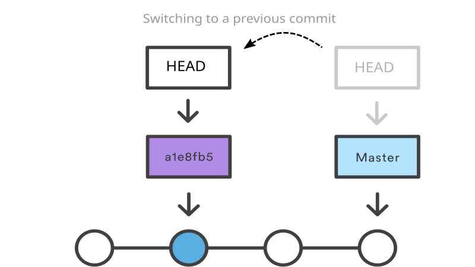
Before we go back to a previous version of our project, we’ll just visualise our history in the same way as the diagram above.
OUTPUT
* 6a48241 (HEAD, master) Cite previous work in introduction
* ed26351 Cite PCASP paper
* 7446b1d Write introduction
* 4f572d5 Add title and authorNotice how HEAD and master point to the
same commit.
As we’ll find out in episode 6, the
switch command is used to switch between branches, but
if we want to switch to a commit instead of a named branch, we’ll need
to use switch with the -d (detach) option.
Let’s go back to the very first commit we made:
We will get something like this:
OUTPUT
HEAD is now at 8bd9133 Add title and authorAnd if we run
we get a confirmation that we have a detached HEAD:
OUTPUT
HEAD detached at 8bd9133
nothing to commit, working tree cleanIf we look at paper.md we’ll see it’s our very first
version. And if we look at our directory,
OUTPUT
paper.mdthen we see that our refs.txt file is gone. But don’t
worry, while it’s gone from our working directory, it’s still in our
repository.
Let’s visualise the repo again now we are a ‘detached HEAD’ state:
OUTPUT
* 6a48241 (master) Reference second paper in introduction
* ed26351 (HEAD) Reference Allen et al in introduction
* 7446b1d Write introduction
* 4f572d5 Add title and authorsNotice how HEAD no longer points to the same commit as
master. Let’s return to the current version of the project
by switching back to master.
See that refs.txt is back in the working directory,
OUTPUT
paper.md refs.txtSo we can get any version of our files from any point in time. In other words, we can set up our working directory back to any stage it was at when we made a commit.
Using tags as nicknames for commit identifiers
Commit identifiers are long and cryptic. Git allows us to create tags, which act as easy-to-remember nicknames for commit identifiers.
For example,
We can list tags by doing:
Let’s explain to the reader why this research is important:
BASH
$ nano paper.md # Give context for research
$ git add paper.md
$ git commit -m "Explain motivation for research" paper.mdWe can switch back to our previous version using our tag instead of a commit identifier.
We might want to have a look around while we’re here:
And to return to the latest commit, we use
Top tip: tag significant events
When do you tag? Well, whenever you might want to get back to the exact version you’ve been working on. For a paper, this might be a version that has been submitted to an internal review, or has been submitted to a conference. For code this might be when it’s been submitted to review, or has been released.
Key Points
-
git logshows the commit history -
git diffdisplays differences between commits -
git switch -drecovers previous states of the repo -
HEADpoints to the commit you have checked out -
masterpoints to the tip of themasterbranch -
git tagallows commits to be given a descriptive label -
git difftoolshows changes using your configured diff GUI
Content from Break
Last updated on 2026-07-09 | Edit this page
Estimated time: 15 minutes
Please take a 15 minute break.
We will continue with the next episode afterwards.
Content from Commit advice
Last updated on 2026-07-09 | Edit this page
Estimated time: 15 minutes
Overview
Questions
- How, what, and when to commit?
- What makes a good commit message?
Objectives
- Understand what makes a good commit message
- Know which types of files not to commit
- Know when to commit changes
How to write a good commit message
Commit messages should explain why you have made your changes. They should mean something to others who may read them — including your future self in 6 months from now. As such you should be able to understand why something happened months or years ago.
Well written commit messages make reviewing code much easier, and
more enjoyable. They also make interacting with the log easier —
commands like blame, revert,
rebase, and log.
Here is an excellent summary of best-practice, following established conventions. It’s well worth a read but the key points are given below:
- Separate the subject from body with a blank line
- Limit the subject line to 50 characters
- Capitalize the subject line
- Do not end the subject line with a period
- Use the imperative mood in the subject line
- Wrap the body at 72 characters
- Use the body to explain what and why vs. how
How good are these commit messages?
The following are taken from a real project.
- Which messages conform to the conventions above?
- Can you rewrite those which don’t?
- Which do you prefer?
- Add readme with links to data sources
- Started exploring data
- successfully extracted all phase 2 info from CH data
- dropping columns that look like they are of no use
- Ignore venv directory
- No problems
- Wrong tense
- Wrong tense. Doesn’t start with capital letter.
- Wrong tense. Doesn’t start with capital letter.
- No problems
Commit anything that cannot be automatically recreated
Typically we use version control to save anything that we create
manually e.g. source code, scripts, notes, plain-text documents, LaTeX
documents. Anything that we create using a compiler or a tool
e.g. object files (.o, .a,
.class, .pdf, .dvi etc), binaries
(exe files), libraries (dll or
jar files) we don’t save as we can recreate it from the
source. Adopting this approach also means there’s no risk of the
auto-generated files becoming out of sync with the manual ones.
We can automatically ignore such files using a .gitignore
file.
When to commit changes?
- Commit frequently.
- There are no hard and fast rules, but good commits are atomic - they are the smallest change that remain meaningful.
- In the same way that it is wise to frequently save a document that you are working on, so too is it wise to save numerous revisions of your files. More frequent commits increase the granularity of your “undo” button.
- Small commits also help to avoid large merge conflicts.
- Test before you commit
- Don’t commit changes until you’ve tested that your code works.
- Non-working code should be fixed before you commit.
- Don’t commit unfinished work
- Break your code changes into small, but working chunks.
- If you need to temporarily save some work-in-progress (e.g. in order
to work in another branch), use
git stash
- Commit related changes.
- Confine your commit to directly related changes. If you fix two separate bugs, you should have two separate commits.
git add --patch
This is a way to stage only parts of a file. If you have done lots of work without committing, it may be useful to commit your changes as a series of small commits. This command allows you to choose which changes go into which commit so you can group the changes logically.
- Guide to
git add --patch - Manually editing hunks is the most difficult aspect.
Key Points
- Commit messages explain why changes were made, so make them clear and concise
- Follow conventions to give a history that is both useful, and easy to read
- Only commit files which can’t be automatically recreated
- List files to ignore by committing a
.gitignorefile - Selectively stage changes to files using
git add --patch
Content from Branching
Last updated on 2026-07-09 | Edit this page
Estimated time: 40 minutes
Overview
Questions
- What is a branch?
- How can I merge changes from another branch?
Objectives
- Know what branches are and why you would use them
- Understand how to merge branches
- Understand how to resolve conflicts during a merge
What is a branch?
You might have noticed the term branch in status messages:
OUTPUT
On branch master
nothing to commit (working directory clean)and when we wanted to get back to our most recent version of the
repository, we used git switch master.
Not only can our repository store the changes made to files and directories, it can store multiple sets of these, which we can use and edit and update in parallel. Each of these sets, or parallel instances, is termed a branch and master is Git’s default branch.
A new branch can be created from any commit. Branches can also be merged together.
Why are branches useful?
Suppose we’ve developed some software and now we want to try out some new ideas but we’re not sure yet whether we’ll keep them. We can then create a branch feature1 and keep our master branch clean. When we’re done developing the feature and we are sure that we want to include it in our program, we can merge the feature branch with the master branch. This keeps all the work-in-progress separate from the master branch, which contains tested, working code.
When we merge our feature branch with master git creates a new commit which contains merged files from master and feature1. After the merge we can continue developing. The merged branch is not deleted. We can continue developing (and making commits) in feature1 as well.
Branching workflows
A simple workflow I recommend using is the feature branch workflow.
This consists of:
- A master branch, representing a released version of the code
- Various feature branches representing work-in-progress, new features, bug fixes etc
The main idea is to start each piece of work in a new feature branch, and merge finished work into master. You shouldn’t normally be committing directly to master.
For example:
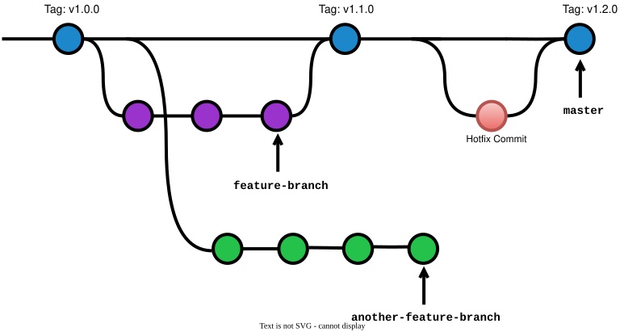
There are various possible workflows when using Git for code development. If you want to learn more about different workflows with Git, have a look at this discussion on the Atlassian website.
Branching in practice
One of our colleagues wants to contribute to the paper but is not quite sure if it will actually make a publication. So it will be safer to create a branch and carry on working on this “experimental” version of the paper in a branch rather than in the master.
So we create a new branch:
and then switch to it.
OUTPUT
Switched to branch 'simulations'In practice you’d probably want to combine these two steps using
git switch -c simulations which both creates the new
branch, and switches to it all in one command.
We’re going to change the title of the paper and update the author list (adding John Smith). However, before we get started it’s a good practice to check that we’re working on the right branch.
OUTPUT
master
* simulationsThe * indicates which branch we’re currently in. Now let’s make the changes to the paper.
BASH
$ nano paper.md # Change title and add co-author
$ git add paper.md
$ git commit # "Modify title and add John as co-author"If we now want to work in our master branch. We can
switch back by using:
OUTPUT
Switched to branch 'master'Having written some of the paper, we have thought of a better
title for the master version of the paper.
Merging and resolving conflicts
We are now working on two papers: the main one in our
master branch and the one which may possibly be
collaborative work in our “simulations” branch. Let’s add
another section to the paper to write about John’s simulations.
BASH
$ git switch simulations # Switch branch
$ nano paper.md # Add 'simulations' section
$ git add paper.md
$ git commit -m "Add simulations" paper.mdAt this point let’s visualise the state of our repo, and we can see the diverged commit history reflecting the recent work on our two branches:
OUTPUT
* 89d5c6e (simulations) Add simulations
* 05d393a Change title and add coauthor
| * (HEAD, master) bdebbe0 Include aircraft in title
|/
* 87a65e6 Explain motivation for research
* 6a48241 Cite previous work in introduction
* ed26351 Cite PCASP paper
* 7446b1d Start the introduction
* 4f572d5 Add title and authorAfter some discussions with John we decided that we will publish
together, hence it makes sense to now merge all that was authored
together with John in branch “simulations”. We can do that by
merging that branch with the master branch. Let’s
try doing that:
OUTPUT
Auto-merging paper.md
CONFLICT (content): Merge conflict in paper.md
Automatic merge failed; fix conflicts and then commit the result.Git cannot complete the merge because there is a conflict - if you recall, after creating the new branch, we changed the title of the paper on both branches. We have to resolve the conflict and then complete the merge. We can get some more detail
OUTPUT
On branch master
You have unmerged paths.
(fix conflicts and run "git commit")
Unmerged paths:
(use "git add <file>..." to mark resolution)
both modified: paper.mdLet’s look inside paper.md:
OUTPUT
# Title
<<<<<<< HEAD
Aircraft measurements of biomass burning aerosols over West Africa
=======
Simulations of biomass burning aerosols over West Africa
>>>>>>> simulationsThe mark-up shows us the parts of the file causing the conflict and the versions they come from. We now need to manually edit the file to resolve the conflict. This means removing the mark-up and doing one of:
Keep the current version, which is the one marked-up by HEAD i.e. “Aircraft measurements of biomass burning aerosols over West Africa”
Keep the version from the other branch, which is the one marked-up by simulations i.e. “Simulations of biomass burning aerosols over West Africa”
Or manually edit the line to something new which might combine some elements of the two e.g. “Aircraft measurements and simulations of biomass burning aerosols over West Africa”
We edit the file. Then commit our changes:
BASH
$ nano paper.md # Resolve conflict by editing paper.md
$ git add paper.md # Let Git know we have resolved the conflict
$ git commitThis is where version control proves itself better than DropBox or GoogleDrive, this ability to merge text files line-by-line and highlight the conflicts between them, so no work is ever lost.
We can see the two branches merged if we take another look at the log graph:
OUTPUT
* 39cc80d (HEAD, master) Merge branch 'simulations'
|\
| * 89d5c6e (simulations) Add simulations
| * 05d393a Change title and add coauthor
* | bdebbe0 Include aircraft in title
|/
* 87a65e6 Explain motivation for research
* 6a48241 Cite previous work in introduction
* ed26351 Cite PCASP paper
* 7446b1d Start the introduction
* 4f572d5 Add title and authorLooking at our history - revisited
We already looked at “going back in time with Git”. But now we’ll look at it in more detail to see how moving back relates to branches and we will learn how to actually undo things. So far we were moving back in time in one branch by switching to one of the past commits.
But we were then in the “detached HEAD” state.
Add a commit to detached HEAD
- Switch to one of the previous commits from our repository.
- Make some changes and commit them. What happened?
- Now try to run
git branch. What can you see?
BASH
git switch -d HEAD~1 # Check out the commit one before last
nano paper.md # Make some edits
git add paper.md # Stage the changes
git commit # Commit the changes
git branch # You should see a message like the one below,
# indicating your commit does not belong to a branchOUTPUT
* (detached from 57289fb)
masterYou have just made a commit on a detached HEAD – as you can see from the output above, a new temporary branch has been created, which doesn’t have a name.
See this detached HEAD animation of the above process.
Abandon the commit on a detached HEAD
You decide that you want to abandon that commit. How would you get back to the current version of your project?
Git will warn you that you are leaving behind changes that would be lost:
The output you see will be slightly different to that below, reflecting your previous commit message and commit ID.
OUTPUT
Warning: you are leaving 1 commit behind, not connected to
any of your branches:
eb7c650 Add empty line for branching exercise
If you want to keep them by creating a new branch, this may be a good time
to do so with:
git branch new_branch_name eb7c650
Switched to branch 'master'
Your branch is up-to-date with 'master'.See this abandon detached HEAD animation.
Save your changes in a new branch
Preparation:
- You should be on the
masterbranch after that last exercise. If not, switch to master again:git switch master - Switch (-d) to one of the previous commits from your repository.
- Make some changes, save the file(s), and make a commit on the detached HEAD as you did in the first exercise.
- Run
git branchto list your local branches, and see that you are on a temporary branch.
This time we want to keep the commit rather than abandon it.
- Create a new branch and switch to it.
- Now run
git logand see that your new commit belongs to this new branch. - List your local branches again and see that the temporary branch has gone.
- Switch back to the
masterbranch
BASH
git switch -d HEAD~1 # Checkout the commit before last
nano paper.md # Modify one of your files
git commit -a # Commit all the modified files
git branch # List local branchesOUTPUT
* (HEAD detached from f908519)
master
simulationsYou are currently on a temporary, unnamed branch, as indicated by the
*.
OUTPUT
Switched to a new branch 'dh-exericise'OUTPUT
* dh-exericise
master
simulationsThe commit you made on the detached HEAD now belongs to a named
branch (dh-exercise in the example above), rather than a
temporary branch.
See this new branch animation for the key points in this exercise.
Key Points
-
git switchswitches to another branch -
git switch -c <branch_name>creates a new branch and switches to it -
git merge <branch_name>merges into current branch - Use feature branches for new ideas and fixes, before merging into
master - Merging does not delete any branches
Content from Lunch break
Last updated on 2026-07-09 | Edit this page
Estimated time: 60 minutes
Set up SSH keys if you haven’t already
Content from Undoing changes
Last updated on 2026-07-09 | Edit this page
Estimated time: 30 minutes
Overview
Questions
- How can I discard unstaged changes?
- How do I edit the last commit?
- How can I undo a commit?
Objectives
- Be able to discard unstaged changes
- Be able to amend the most recent commit
- Be able to discard all changes since a particular commit
- Be able to undo the changes introduced by a commit
There are a number of things which we can amend and change after they have been commited in Git.
Discarding local changes
Maybe we made our change just to see how something looks, or to
quickly try something out. Maybe we asked a colleague for help but they
ended up making things worse! Whatever the reason, if we’re not unhappy
with our changes, and we haven’t yet done a git add we can
just throw the changes away and return our file to the most recent
version we committed to the repository by using:
BASH
$ nano paper.md # Make some small edits to the file
$ git restore paper.md # Discard edits we just madeand we can see that our file has reverted to being the most up-to-date one in the repository:
BASH
$ git status # See that we have a clean working directory
$ nano paper.md # Inspect file to verify changes have been discardedAmending the most recent commit
If you just made a commit and realised that either you did it a bit
too early and the files are not yet ready to be commited. Or, which is
not as uncommon as you think, your commit message is not as it is
supposed to be. You can fix that using the command
git commit --amend
This opens up the default editor for Git which includes the previous commit message - you can edit it and close the editor. This will simply fix the commit message.
But what if we forgot to include some files in the commit?
Let’s try it on our example. First, let’s modify two files: our paper file and the references file. We will add a methodology section to the paper where we detail the model used for the simulations, and add a reference for this to the references file.
BASH
$ nano paper.md # Add methodology section, including a reference to model
$ nano refs.txt # Add new reference for the model used
$ git status # Get a status update on file modificationsOUTPUT
$ On branch master
Changes not staged for commit:
(use "git add <file>..." to update what will be committed)
(use "git restore <file>..." to discard changes in working directory)
modified: refs.txt
modified: paper.md
no changes added to commit (use "git add" and/or "git commit -a")Let’s then add and commit paper.md but not the references file.
Let’s have a look at our working directory now:
OUTPUT
$ On branch master
Changes not staged for commit:
(use "git add <file>..." to update what will be committed)
(use "git restore <file>..." to discard changes in working directory)
modified: refs.txt
no changes added to commit (use "git add" and/or "git commit -a")Also, run git log -2 to see what is the latest commit
message and ID.
Now, we want to fix our commit and add the references file.
This will again bring up the editor and we can amend the commit message if required.
Now when we run git status and then git log
we can see that our Working Directory is clean and that both files were
added.
git revert (undo changes associated with a commit)
git revert removes the changes applied in a specified
commit. However, rather than deleting the commit from history, git works
out how to undo those changes introduced by the commit, and appends a
new commit with the resulting content.
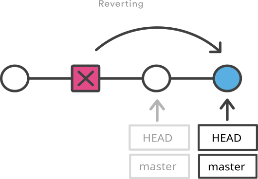
Let’s try it on our example.
Revert a commit
Modify the paper, describing the SMPS which is another instrument used to measure particle sizes, and then make a commit.
We now realise that what we’ve just done in our journal article is incorrect because we are not using the data from that instrument. Some of the data got corrupted, and due to problems with the logging computer we are not going to use that data. So it makes sense to abandon the commit completely.
Find the commit ID of the commit you just made, and use it in the command below to revert the commit:
What does your history look like now?
When we revert, a new commit is created. The HEAD pointer and the branch pointer are in fact moved forward rather than backwards.
We can revert any previous commit. That is, we can “abandon” any of the previous changes. However, depending on the changes we have made since, we may bump into a conflict (which we will cover in more detail later on). For example:
OUTPUT
error: could not revert 848361e... Describe SMPS
hint: after resolving the conflicts, mark the corrected paths
hint: with 'git add <paths>' or 'git rm <paths>'
hint: and commit the result with 'git commit'Behind the scenes Git gets confused trying to merge the commit HEAD is pointing to with the past commit we’re reverting.
So we have seen that git revert is a non-destructive way
to undo a commit. What if we don’t want to keep a record of undoing
commits? That would give a neater history. git reset can
also be used to undo commits, but it does so by deleting history.
git reset --hard (restore a previous state by deleting
history)
git reset has several uses, and is most often used to
unstage files from the staging area i.e. git reset or
git reset <file>.
We are going to use a variant
git reset --hard <commit> to reset things to how they
were at <commit>. This is a permanent undo which
deletes all changes more recent than <commit> from
your history. There is clearly potential here to lose work, so use this
command with care.
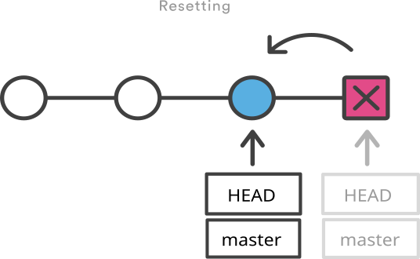
Let’s try that on our paper, building on the example in the previous exercise. Now we have two commits which we want to abandon: the commit outlining the unreliable instrumentation, and the subsequent revert commit. We can achieve this by resetting to the last commit we want to keep.
We can do that by running:
OUTPUT
HEAD is now at fbdc44b Add methodology section and update references fileThis moves the tip of the branch back to the specified commit. If we
look in-depth, this command moves back two pointers: HEAD
and the pointer to the tip of the branch we currently are working on
(master). (HEAD~ = the commit right before HEAD;
HEAD~2 = two commits before HEAD)
The final effect is what we need: we abandoned the commits and we are now back to where we were before making the commit about the data we are not using.
Click for an animation of the revert and reset operations we just used.
This
article discusses more in depth git reset showing the
differences between the three options:
--soft--mixed--hard
Top tip: do not use git reset
with remote branches
There is one important thing to remember about the reset
command - it should only be used with branches that have not been shared
yet (that is they haven’t been pushed into a remote repository that
others are using). Resetting is changing the history
without leaving trace. This is always a bad practice
when using remote repositories and can lead to a horrible mess.
Reverting records the fact of “abandoning the commit” in the history.
When we revert in a branch that is shared with others and then push that
branch into the remote repository, it is as if we “came clean” about
what we were doing. Everyone who pulls the branch in which we reverted
changes will see it. With git reset we “keep it secret”
that we have undone some changes.
As such, if we want to abandon changes in branches that are shared
with others, we should to use the revert command.
See this Atlassian
online tutorial for further reading about the differences between
git revert and git reset.
How to undo almost anything with Git
See this blog post for more example scenarios and how to recover from them.
Mental freedom
A nice side effect of being able to easily undo changes is the mental freedom/headspace it affords you. There is no penalty for trying something out, making a mess, and then discarding it. It’s quite liberating to be able to just get on with things without nagging doubts about how you’re going to undo it if it doesn’t work out.
Key Points
-
git restore <file>discards unstaged changes -
git commit --amendallows you to edit the last commit -
git revertundoes a commit, preserving history -
git reset --hardundoes a commit by deleting history
Content from Working from multiple locations with a remote repository
Last updated on 2026-07-09 | Edit this page
Estimated time: 35 minutes
Overview
Questions
- What is a remote repository
- How can I use GitHub to work from multiple locations?
Objectives
- Understand how to set up remote repository
- Understand how to push local changes to a remote repository
- Understand how to clone a remote repository
We’re going to set up a remote repository that we can use from multiple locations. The remote repository can also be shared with colleagues, if we want to.
GitHub
GitHub is a company which provides remote repositories for Git and a range of functionalities supporting their use. GitHub allows users to set up their private and public source code Git repositories. It provides tools for browsing, collaborating on and documenting code. GitHub, like other services such as Bitbucket and GitLab supports a wealth of resources to support projects including:
- Code download
- History of changes to repositories
- Browsing code from within a web browser, with syntax highlighting
- E-mail notifications
- Software release management
- Issue tracking (great for planning and discussing work)
Note GitHub’s free repositories have public licences by default. If you don’t want to share (in the most liberal sense) your stuff with the world and you want to use GitHub, you can create a private repository, which is limited to 3 collaborators for a free GitHub account.
Are you already using GitHub?
- If you’re not already using GitHub (or similar) for your research code what is holding you back? What concerns do you have?
- If you’ve already taken the plunge, how did you overcome any concerns?
- Your code isn’t ‘good enough’ yet
- Getting your code shared online is one of the best ways to improve it.
- GitHub has some great tools for collaboration which will make it easier to get help from others (e.g. code review from a colleague) and
- Having the history of changes and discussions all in one place makes it easier for someone else to build on your code (or vice versa)
- The reality is code is nearly always a work-in-progress, so it’s best to just get started wherever you’re currently up to
- Who owns code in a public repo?
- Keeping your code in a private repo will ensure that no-one can view it or use it
- Even a public repo without a licence is covered by default copyright laws
- However, adding a licence e.g. MIT and making a release means others can use it but you would retain copyright for your work
- https://choosealicense.com/ is a good tool for deciding which licence is appropriate for you
- You can also release code with a DOI so that people can cite it in papers.
Create a new repository
Now, we can create a repository on GitHub,
- Log in to GitHub
- Click on the Create icon on the top right
- Enter Repository name: “paper”
- For the purpose of this exercise we’ll create a public repository
- Make sure that Initialize this repository with a README is unselected
- Click Create Repository
You’ll get a page with new information about your repository. We already have our local repository and we will be pushing it to GitHub using SSH, so this is the option we will use:
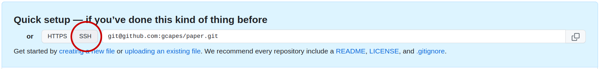
Authentication Errors
If you get a warning that HTTPS access is deprecated, or a token is required, then you accidentally cloned the repository using HTTPS and not SSH. You can fix this from the command line by resetting the remote repository URL setting on your local repo:
{: .caution}
The first line sets up an alias origin, to correspond to
the URL of our new repository on GitHub.
Push locally tracked files to a remote repository
Now copy and paste the second line,
OUTPUT
Counting objects: 32, done.
Delta compression using up to 8 threads.
Compressing objects: 100% (28/28), done.
Writing objects: 100% (32/32), 3.29 KiB | 0 bytes/s, done.
Total 32 (delta 7), reused 0 (delta 0)
To github.com:gcapes/paper
* [new branch] master -> master
Branch master set up to track remote branch master from origin.This pushes our master branch to the
remote repository, named via the alias origin and creates a
new master branch in the remote repository.
Now, on GitHub, we should see our code and if we click the
Commits tab we should see our complete history of
commits.
Our local repository is now available on GitHub. So, anywhere we can access GitHub, we can access our repository.
Push other local branches to a remote repository
Let’s push each of our local branches into our remote repository:
The branch should now be created in our GitHub repository.
To list all branches (local and remote):
Automatically enter your ssh passphrase with the ssh agent
If your ssh key has a passphrase and you don’t want to enter it every time, you can add your key to the ssh agent which manages your keys and remembers your passphrase.
Be sure to follow the correct instructions for your operating system at the link above!
Cloning a remote repository
Now that we have a copy of the repo on GitHub, we can download or
git clone a fresh copy to work on from another
computer.
So let’s pretend that the repo we’ve been working on so far is on a PC in the office, and you want to do some work on your laptop at home in the evening.
Before we clone the repo, we’ll navigate up one directory so that we’re not already in a git repo.
Then to clone the repo into a new directory called
laptop_paper
OUTPUT
Cloning into 'laptop_paper'...
remote: Counting objects: 32, done.
remote: Compressing objects: 100% (21/21), done.
remote: Total 32 (delta 7), reused 32 (delta 7), pack-reused 0
Unpacking objects: 100% (32/32), done.
Checking connectivity... done.Cloning creates an exact copy of the repository. By deafult it
creates a directory with the same name as the name of the repository.
However, we already have a paper dircectory, so have
specified that we want to clone into a new directory
laptop_paper.
Now, if we cd into laptop_paper we can see that
we have our repository,
and we can see our Git configuration files too:
In order to see the other branches locally, we can check them out as before:
Push changes to a remote repository
We can use our cloned repository just as if it was a local repository so let’s add a results section and commit the changes.
BASH
$ git switch master # We'll continue working on the master branch
$ nano paper.md # Add results section
$ git add paper.md # Stage changes
$ git commitHaving done that, how do we send our changes back to the remote repository? We can do this by pushing our changes,
If we now check our GitHub page we should be able to see our new changes under the Commit tab.
To see all remote repositories (we can have multiple!) type:
Key Points
- Git is the version control system: GitHub is a remote repositories provider.
-
git cloneto make a local copy of a remote repository -
git pushto send local changes to remote repository
Content from Collaborating with a remote repository
Last updated on 2026-07-09 | Edit this page
Estimated time: 35 minutes
Overview
Questions
- How do I update my local repository with changes from the remote?
- How can I collaborate using Git?
Objectives
- Understand how to pull changes from remote repository
- Understand how to resolve merge conflicts
Pulling changes from a remote repository
Having a remote repository means we can share it and collaborate with others (or even just continue to work alone but from multiple locations). We’ve seen how to clone the whole repo, so next we’ll look at how to update our local repo with just the latest changes on the remote.
We were in the laptop_paper directory at the end of the
last episode, having pushed one commit to the remote. Let’s now change
directory to the other repository paper, and
git pull the commit from the remote.
We can now view the contents of paper.md and check the
log to confirm we have the latest commit from the remote:
Still in the paper directory, let’s add
a figures section to paper.md, commit the file and push
these changes to GitHub:
BASH
$ nano paper.md # Add figures section
$ git add paper.md
$ git commit -m "Add figures"
$ git pushNow let’s change directory to our other repository and
fetch the commits from our remote repository,
git fetch doesn’t change any of the local branches, it
just gets information about what commits are on the remote branches.
We can visualise the remote branches in the same way as we did for local branches, so let’s draw a network graph before going any further:
OUTPUT
* 7c239c3 (origin/master, origin/HEAD) Add figures
* 0cc2a2d (HEAD -> master) Discuss results
* 3011ee0 Describe methodology
* 6420699 Merge branch 'simulations'
|\
| * 7138785 (origin/simulations) Add simulations
| * e695fa8 Change title and add coauthor
* | e950911 Include aircraft in title
|/
* 0b28b0a Explain motivation for research
* 7cacba8 Cite previous work in introduction
* 56781f4 Cite PCASP paper
* 5033467 Start the introduction
* e08262e Add title and authorAs expected, we see that the origin/master branch is
ahead of our local master branch by one commit — note that
the history hasn’t diverged, rather our local branch is missing the most
recent commit on origin/master.
We can now see what the differences are by doing,
which compares our master branch with the
origin/master branch which is the name of the
master branch in origin which is the alias for
our cloned repository, the one on GitHub.
We can then merge these changes into our current
repository, but given the history hasn’t diverged, we don’t get a merge
commit — instead we get a fast-forward merge.
OUTPUT
Updating 0cc2a2d..7c239c3
Fast-forward
paper.md | 4 ++++
1 file changed, 4 insertions(+)If we look at the network graph again, all that has changed is that
master now points to the same commit as
origin/master.
OUTPUT
* 7c239c3 (HEAD -> master, origin/master, origin/HEAD) Add figures
* 0cc2a2d Discuss results
* 3011ee0 Describe methodology
* 6420699 Merge branch 'simulations'We can inspect the file to confirm that we have our changes.
So we have now used two slightly different methods to get the latest
changes from the remote repo. You may already have guessed that
git pull is a shorthand for git fetch followed
by git merge.
Fetch vs pull
If git pull is a shortcut for git fetch
followed by git merge then, why would you ever want to do
these steps separately?
Well, depending on what the commits on the remote branch contain, you might want to abandon your local commits before merging (e.g. your local commits duplicate the changes on the remote), rebase your local branch to avoid a merge commit, or something else.
Fetching first lets you inspect the changes before deciding what you want to do with them.
git fetch is also used when you want to get a local copy
of a new remote (feature) branch. First you git fetch the
remote tracking branches, then git switch to the new
branch.
Let’s write the conclusions:
BASH
$ nano paper.md # Write Conclusions
$ git add paper.md
$ git commit -m "Write Conclusions" paper.md
$ git push origin master
$ cd ../paper # Switch back to the paper directory
$ git pull origin master # Get changes from remote repositoryThis is the same scenario as before, so we get another fast-forward merge.
We can check that we have our changes:
Conflicts and how to resolve them
Let’s continue to pretend that our two local repositories are hosted on two different machines. You should still be in the original paper folder. Add an affiliation for each author. Then push these changes to our remote repository:
BASH
$ nano paper.md # Add author affiliations
$ git add paper.md
$ git commit -m "Add author affiliations"
$ git push origin masterNow let us suppose, at a later date, we use our other repository (on the laptop) and we want to change the order of the authors.
The remote branch origin/master is now ahead of our
local master branch on the laptop, because we haven’t yet
updated our local branch using git pull.
BASH
$ cd ../laptop_paper # Switch directory to other copy of our repository
$ nano paper.md # Change order of the authors
$ git add paper.md
$ git commit -m "Change the first author" paper.md
$ git push origin masterOUTPUT
To https://github.com/<USERNAME>/paper.git
! [rejected] master -> master (fetch first)
error: failed to push some refs to 'https://github.com/<USERNAME>/paper.git'
hint: Updates were rejected because the remote contains work that you do
hint: not have locally. This is usually caused by another repository pushing
hint: to the same ref. You may want to first integrate the remote changes
hint: (e.g., 'git pull ...') before pushing again.
hint: See the 'Note about fast-forwards' in 'git push --help' for details.Our push fails, as we’ve not yet pulled down our changes from our remote repository. Before pushing we should always pull, so let’s do that…
and we get:
OUTPUT
Auto-merging paper.md
CONFLICT (content): Merge conflict in paper.md
Automatic merge failed; fix conflicts and then commit the result.As we saw earlier, with the fetch and merge, git pull
pulls down changes from the repository and tries to merge them. It does
this on a file-by-file basis, merging files line by line. We get a
conflict if a file has changes that affect the same
lines and those changes can’t be seamlessly merged. We had this
situation before in the branching episode when we merged a
feature branch into master. If we look at the
status,
we can see that our file is listed as Unmerged and if we look at paper.md, we see something like:
OUTPUT
<<<<<<< HEAD
Author
G Capes, J Smith
=======
author
J Smith, G Capes
>>>>>>> 1b55fe7f23a6411f99bf573bfb287937ecb647fcThe mark-up shows us the parts of the file causing the conflict and the versions they come from. We now need to manually edit the file to resolve the conflict. Just like we did when we had to deal with the conflict when we were merging the branches.
We edit the file. Then commit our changes. Now, if we push …
BASH
$ nano paper.md # Edit file to resolve merge conflict
$ git add paper.md # Stage the file
$ git commit # Commit to mark the conflict as resolved
$ git push origin master… all goes well. If we now go to GitHub and click on the “Overview” tab we can see where our repository diverged and came together again.
This is where version control proves itself better than DropBox or GoogleDrive, this ability to merge text files line-by-line and highlight the conflicts between them, so no work is ever lost.
We’ll finish by pulling these changes into other copy of the repo, so both copies are up to date:
BASH
$ cd ../paper # Switch to 'paper' directory
$ git pull origin master # Merge remote branch into localCollaborating on a remote repository
In this exercise you should work with a partner or a group of three.
One of you should give access to your remote repository on GitHub to the
others (by selecting
Settings tab -> Access -> Collaborators).
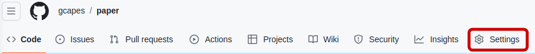
The invited person should then check their email to accept the invitation.Now those of you who are added as collaborators should clone the repository of the first person on your machines. (make sure that you don’t clone into a directory that is already a repository!)
Each of you should now make some changes to the files in the repository e.g. fix a typo, add a file containing supplementary material. Commit the changes and then push them back to the remote repository. Remember to pull changes before you push.
Creating branches and sharing them in the remote repository
Working with the same remote repository, each of you should create a new branch locally and push it back to the remote repo.
Each person should use a different name for their local branch. The
following commands assume your new branch is called
my_branch, and your partner’s branch is called
their_branch — you should substitute the name of your new
branch and your partner’s new branch.
BASH
$ git switch -c my_branch # Create and switch to a new branch.
# Substitute your local branch name for 'my_branch'.Now create/edit a file (e.g. fix a typo, add supplementary material etc), and then commit your changes.
The other person should check out local copies of the branches created by others (so eventually everybody should have the same number of branches as the remote repository).
To fetch new branches from the remote repository (into your local
.git database):
OUTPUT
Counting objects: 3, done. remote:
Compressing objects: 100% (3/3), done.
remote: Total 3 (delta 0), reused 2 (delta 0) Unpacking objects: 100% (3/3), done.
From https://github.com/gcapes/paper
9e1705a..640210a master -> origin/master
* [new branch] their_branch -> origin/their_branchYour local repository should now contain all the branches from the
remote repository, but the fetch command doesn’t actually
update your local branches.
The next step is to check out a new branch locally to track the new remote branch.
OUTPUT
Branch their_branch set up to track remote branch their_branch from origin.
Switched to a new branch 'their_branch'Key Points
-
git pullmerges remote changes into local branch of repository
Content from Break
Last updated on 2026-07-09 | Edit this page
Estimated time: 15 minutes
Please take a 15 minute break.
We will continue with the next episode afterwards.
Content from Rebasing
Last updated on 2026-07-09 | Edit this page
Estimated time: 25 minutes
Overview
Questions
- What is rebasing?
Objectives
- Understand what is meant by rebasing
- Understand the difference between merging and rebasing
- When (and when not) to rebase
We were in the paper directory at the end of the last episode, which is where this episode continues.
Let’s review the recent history of our project, noting particularly
the commit message which results when origin/master and
master diverge, and origin/master is merged
back into master.
OUTPUT
* 365748e (HEAD -> master, origin/master, origin/HEAD) Merge branch 'master' of github.com:gcapes/paper
|\
| * ff18da4 Add author affiliations
* | 8f44540 Change first author
|/
* 8494909 Write conclusions
* e90a501 Add figures
* 3011ee0 Discuss resultsNormally a merge commit indicates that a feature branch has been completed, a bug has been fixed, or marks a release version of our project. Our most recent merge commit doesn’t mark any real milestone in the history of the project — all it tells us is that we didn’t pull before we tried to push. Merge commits like this don’t add any real value1, and can quickly clutter the history of a project.
If only there were a way to avoid them, e.g. by starting with the tip of the remote branch and reapplying our local commits from this new starting point. You could also describe this as moving the local commits onto a new base commit i.e. rebasing.
What is it?
Rebasing is the process of moving a whole branch to a new base commit. Git takes your changes, and “replays” them onto the new base commit. This creates a brand new commit for each commit in the original branch. As such, your history is rewritten when you rebase.
It’s like saying “add my changes to what has already been done”.
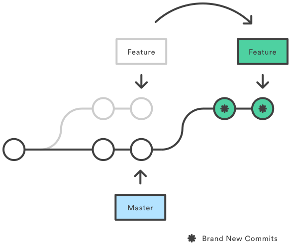
How’s that different to merging?
Imagine you create a new feature branch to work in, and meanwhile
there have been commits added to the master branch, as
shown below.
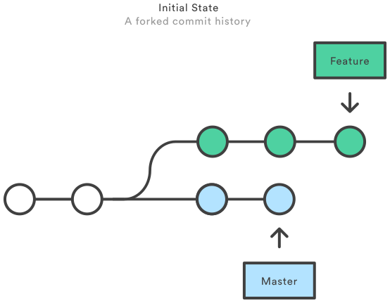
You’ve finished working on the feature, and you want to incorporate
your changes from the feature branch into the
master branch. You could merge directly or rebase then
merge. We have already encountered merging, and it looks like this:
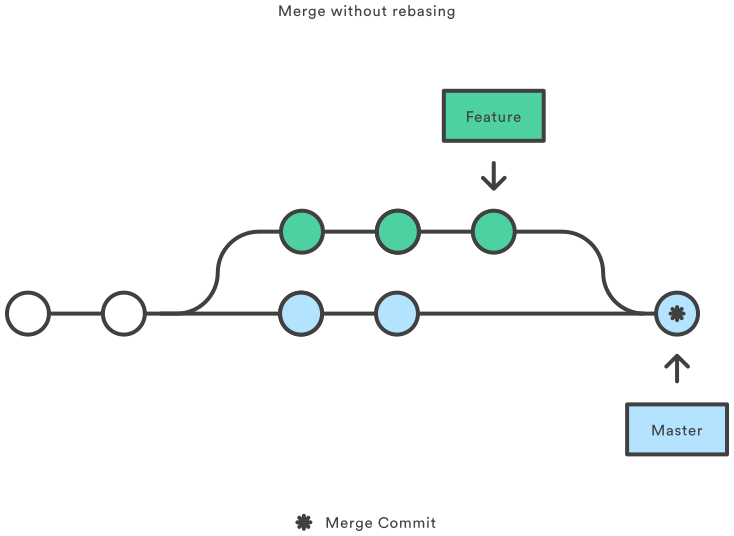
The main reason you might want to rebase is to maintain a linear
project history. In the example above, if you merge directly (recall
that there are new commits on both the master branch and
feature branch), you have a 3-way merge (common ancestor,
HEAD and MERGE_HEAD) and a merge commit results. Note that you get a
merge commit whether or not there are any merge conflicts.
If you rebase, your commits from the feature branch are
replayed onto master, creating brand new commits in the
process. If there are any merge conflicts, you are prompted to resolve
these.
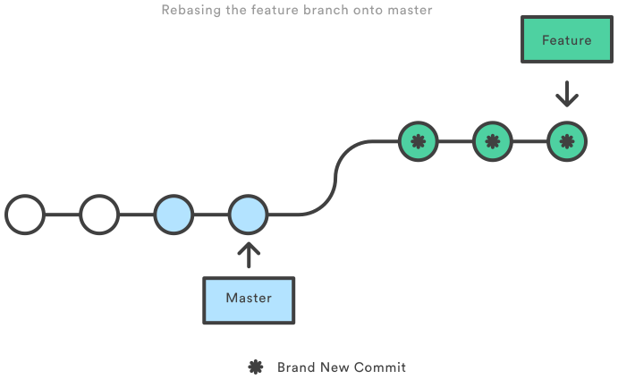
After rebasing, you can then perform a fast-forward merge into
master i.e. without an extra merge commit at the end, so
you have a nice clean linear history.
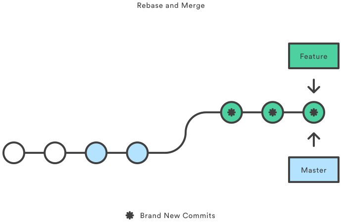
Why would I consider rebasing?
Rebase and merge solve the same problem:
integrating commits from one branch into another. Which method you use
is largely personal preference.
Some reasons to consider rebasing:
- To give a linear project history, which is easier to follow
- This makes using
git log, andgit bisecteasier
- This makes using
- To integrate upstream changes into your local repository, without creating any merge commits
- To keep a feature branch up to date with master, without polluting your feature branch with extraneous merge commits
- Makes pull requests easier to manage (because you’ve already resolved any merge conflicts while rebasing)
- To tidy up a feature branch before merging into master (requires interactive rebase)
Interactive rebasing
git rebase -i will open an interactive rebasing session.
This provides an opportunity to edit, delete, combine, and reorder
individual commits as they are moved onto the new base commit. This can
be useful for cleaning up history before sharing it with others.
A worked example using git rebase <base>
We’ll repeat the scenario from the last episode where the local and
remote branches diverge, but instead of merging the remote branch
origin/master into master, we’ll rebase
master onto origin/master.
We’ll write some acknowledgements, then commit and push.
BASH
$ nano paper.md # Write acknowledgements
$ git add paper.md
$ git commit -m "Write acknowledgements section"
$ git push origin master # Push master branch to remoteWe’ll now switch machine to our laptop, and write the abstract:
BASH
$ cd ../laptop_paper # Pretend we're on the laptop
$ nano paper.md # Add abstract section
$ git add paper.md
$ git commit # "Write abstract"At this point we can view a graph of project history, and see where
the master branch diverges from
origin/master:
BASH
$ git fetch # Retrieve information about remote branches
$ git log --graph --all --oneline --decorate # View project history before rebasingOUTPUT
* 21cfe5f (HEAD -> master) Write abstract
| * 13aa7e3 (origin/master, origin/HEAD) Add acknowledgements
|/
* 365748e Merge branch 'master' of github.com:gcapes/paper
|\
| * ff18da4 Add author affiliations
* | 8f44540 Change first author
|/
* 8494909 Add figures
As before, if we try to push our local branch, it will fail — git
will suggest that we pull in order to merge the remote
commit into our local branch, before pushing again. We did that in the
last episode, which resulted in a ‘forgot-to-pull’ merge commit. This
time we will replay our local branch onto to the remote branch.
Note that this syntax only works because we just did a
git fetch. Typically, you would use
git pull --rebase instead, which combines the fetch and
rebase steps.
Merge conflicts during a rebase
Depending what changes we have made, there may be conflicts we have to fix in order to rebase. If this is the case, Git will let us know, and give some instructions on how to proceed. The process for fixing conflicts is the same as before:
Let’s now visualise our project history again, having rebased
master onto origin/master, and observe that we
now have a linear project history. Rebasing has created a new commit
(with a new commit ID) and put it on top of the commit pointed at by
origin/master — thus avoiding that forgot-to-pull merge
commit!
* 6105e61 (HEAD -> master) Write abstract
* 13aa7e3 (origin/master, origin/HEAD) Add acknowledgements
* 365748e Merge branch 'master' of github.com:gcapes/paper
|\
| * ff18da4 Add author affiliations
* | 8f44540 Change first author
|/
* 8494909 Add figures{: .output}
Having integrated the remote changes into our local branch, we can now push our local branch back to ‘origin’.
This online tutorial gives a good illustration of what happens during rebasing.
Warning: the perils of rebasing
The main rule is: do not rebase branches shared with other contributors. Rebasing changes history and as with practically any Git command which changes history, it should be used with care.
The branches that are pushed to remote repositories should always be merged. For your local branches that you never share, you may use rebasing. Rebasing is convenient if you want to keep a clean history. It also helps to avoid conflicts in the long run. But again, it is considered a better practice to use merge and deal with conflicts rather than mess up shared branches using rebase.
Key Points
-
rebaseapplies your changes on top of a new base (parent) commit - rebasing rewrites history
Content from Pull Requests
Last updated on 2026-07-09 | Edit this page
Estimated time: 20 minutes
Overview
Questions
- How can I contribute to a repository to which I don’t have write access?
- Where can I discuss changes to my code?
- What GitHub tools can I use to plan my work?
Objectives
- Understand what it means to fork a repository
- Be able to fork a repository on GitHub
- Be able to submit a pull request
- Be able to create a new issue
- Be aware of GitHub projects
Pull Requests are a great solution for contributing to repositories to which you don’t have write access. Adding other people as collaborators to a remote repository is a good idea but sometimes (or even most of the time) you want to make sure that their contributions will provide more benefits than the potential mistakes they may introduce.
In large projects, primarily Open Source ones, in which the community of contributors can be very big, keeping the source code safe but at the same time allowing people to make contributions without making them “pass” tests for their skills and trustworthiness may be one of the keys to success.
Leveraging the power of Git, GitHub provides a functionality called Pull Requests. Essentially it’s “requesting the owner of the repository to pull in your contributions”. The owner may or may not accept them. But for you as a contributor, it was really easy to make the contribution.
The process
- Find a repository on GitHub that belongs to someone else
-
Fork it (
git cloneit on GitHub’s servers into your GitHub account) -
git cloneit to your PC/laptop - Create a new branch
- Make changes, and push them to your repository on GitHub
- Request that the owner of the repository you forked pulls in your changes

Advice for submitting Pull Requests
- Keep your Pull Request small and focussed (makes it easier to
process)
- Submit one PR per issue
- Create a separate branch for each issue you work on (you can submit a PR from any branch)
- R.T.F.M.
- If the repository has contributing guidelines, read them, and follow the guidance. This gives your PR a better chance of being accepted.
- Some repositories pre-populate the body of the PR or issue message
with a template.
- Follow the instructions (e.g. provide the information requested)
- Consider creating a new issue first to discuss your ideas before submitting a PR. Some repositories ask for this in their contributing guidelines, but this can be a good approach even if it isn’t required, so that you know whether the owner agrees with your suggestion, and might bring up ideas and/or challenges you haven’t considered.
After submitting your pull request
If things go well, your PR may get merged just as it is. However, for most PRs, you can expect some discussion (on GitHub) and a request for further edits to be made. Given your changes haven’t been merged get, you can make changes either by adding further commits to your branch and pushing them, or you could consider rewriting your history neatly using an interactive rebase onto an earlier commit. In either case, your PR will update automatically once you have pushed your commits.
Send me a Pull Request!
Let’s look at the workflow and try to repeat it:
Fork this repository by clicking on the
Forkbutton at the top of the page.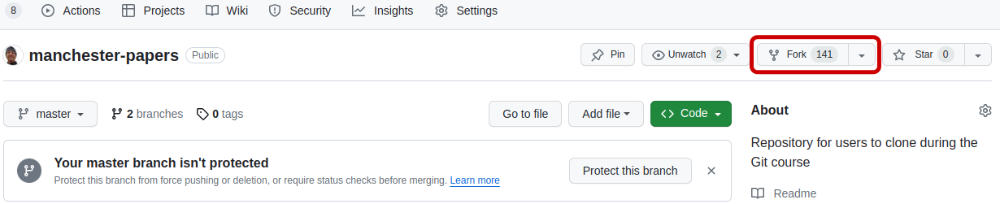
Navigate back to your home directory so you don’t clone into an existing repo in the next step
- Clone the repository from YOUR GitHub account. On
GitHub, click on the green
Codebutton to get the SSH address to clone. You should be running a command like this:
OUTPUT
$ git clone git@github.com:<YOUR_USERNAME>/manchester-papers.git-
cdinto the directory you just cloned.
Create a new branch, then make changes you want to contribute.
bash $ git switch -c <your-new-branch> Commit and
push them back to your repository.
bash $ git push origin <your-new-branch> You won’t
be able to push back to the repository you forked from because you are
not added as a contributor! 2. Go to your GitHub account and in the
forked repository find a green button for creating Pull Requests. Click
it and follow the instructions. 3. The owner of the original repository
gets a notification that someone created a pull request - the request
can be reviewed, commented and merged in (or not) via GitHub.
Using issues for planning and discussion
Issues are a great
way to plan/project manage your own work. You can think of them like a
to-do list, where you create a new branch for each issue, to be merged
into master when completed. They are also a good place for
discussion ahead of creating a pull request. GitHub projects
are a convenient way to project manage your issues via a table and/or
board view.
A nice GitHub integration is that you can close
an issue via a commit message e.g. if you include
Fix #2 in your commit message, it will close issue 2 when
merged into master.
Send yourself a Pull Request!
Pull requests aren’t just for repos where you don’t have write access. You can also create a pull request from a feature branch within your own repo. This is a useful workflow if you would like some input from colleagues - you can request a review and have discussions on the pull request.
- Create a new issue for your repository (e.g. acknowledge funding source)
- Create a new feature branch and switch to it ahead of fixing the issue
- Edit your paper to resolve the issue, and include
Fix #1in your commit message (assuming you’re fixing issue #1). - Push your new feature branch to
origin - Create a new pull request from your feature branch to
master(Look for a green button at the top of thecodetab after pushing) - Merge your pull request on GitHub, under the “Pull requests” tab
Key Points
- A
forkis agit cloneinto your (GitHub) account - A
pull requestasks the owner of a repository to incorporate your changes - Use issues and GitHub projects to plan your work
- You can discuss code on both issues and pull requests
Content from Conclusions and further information
Last updated on 2026-07-09 | Edit this page
Estimated time: 10 minutes
Overview
Questions
- Where can I find out more?
Objectives
- Reflect on how version control would help with the starting scenario
We’ve seen how we can use version control to:
- Keep track of changes like a lab notebook for code and documents.
- Roll back changes to any point in the history of changes to our files - “undo” and “redo” for files.
- Back up our entire history of changes in various locations.
- Work on our files from multiple locations.
- Identify and resolve conflicts when the same file is edited within two repositories without losing any work.
- Collaboratively work on code or documents or any other files.
Now, consider again our initial scenario:
If someone asks you, “Can you process a new data file in exactly the same way as described in your journal paper? Or can I have the code to do it myself?” You can use your version control logs and tags to easily retrieve the exact version of the code that you used.
Version control serves as a log book for your software and documents, ideas you’ve explored, fixes you’ve made, refactorings you’ve done, false paths you’ve explored - what was changed, who by, when and why - with a powerful undo and redo feature!
It also allows you to work with others on a project, whether that be writing code or papers, down to the level of individual files, without the risk of overwriting and losing each others work, and being able to record and understand who changed what, when, and why.
Upload your own code
If you have code that you’re currently working on, which isn’t under version control create a new repo on GitHub and upload it today!
Find out more…
- Download and install Git on your own computer (it’s free!)
- Atlassian Git tutorials — an excellent resource with clear explanations and illustrations
- Learn Git branching — interactive, visual tutorials
- Visual Git Reference — pictorial representations of what Git commands do
- Pro Git — the “official” online Git book.
- Version control by example — an acclaimed online book on version control by Eric Sink.
- Git beyond the basics — a nice reference slideshow covering some more advanced topics
- Best Practices for Scientific Computing
Feedback
Please leave some feedback. It’s good to know how things can be improved.
Key Points
- Use version control whenever possible